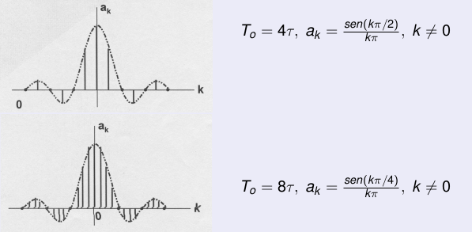

Apliacação de TFourier#
1. Revisão de Série de Fourier#
2. Amostragem#
Séries de Fourier#
Representação#
Anteriormente foi apresentado dois tipos de sinais periódicos:
Conjunto de exponenciais complexas relacionadas harmonicamente:
Séries de Fourier#
Representação#
Uma combinação linear do conjunto de sinais periódico pode ser escrita da seguinte maneira:
Série de Fourier para sinais periódicos:
Séries de Fourier#
Exemplo#
Expandindo a equação acima e agrupando os sinais de mesma frequência tem-se:
Séries de Fourier#
Exemplo#
Séries de Fourier#
Determinação dos coeficientes#
Multiplicando ambos os lados da equação acima por \(e^{-jn\omega_0 t}\)
Integrando em um período:
Séries de Fourier#
Determinação dos coeficientes#
Trocando a ordem da integral com o somatório:
Como:
Portanto:
Séries de Fourier#
Observações#
O intervalo de integração não precisa ser o anterior, basta que seja em um período qualquer.
Equações#
Par de equações que definem a série exponencial de Fourier:
A tranformada de Fourier#
Transformada de Fourier para sinais periódicos#
Um sinal periódico não é absolutamente integrável portanto, a princípio ele não possui transformada de Fourier.
A série e a transformada são relacionadas. Podemos obter a transformada diretamente da série utilizando a função impulso.
A transformada de Fourier#
Transformada de Fourier para sinais periódicos#
Seja:
Seja \(X(\omega)\) uma combinação linear de impulsos, isto é,
Transformada de Fourier para sinais periódicos:
Séries de Fourier#
Condições#
A convergência da série é grantida se as condições de Dirichlet forem satisfeitas:
x(t) é um sinal limitado (absolutamente somável em um período);
apresenta um número finito de máximos e mínimos em um período;
Apresenta um número finito de descontinuidades em um período.
Se o sinal satisfazer as condições acima e não for contínuo então a série convergirá para o ponto médio de x(t) em cada descontinuidade.
Séries de Fourier#
Exemplo#
\( x(t) = \frac{1}{2} + sen(\omega_0t) + 2cos(\omega_0t)+cos\left(2\omega_0t + \frac{\pi}{4}\right) \)$
Séries de Fourier#
Onda quadrada#
Observação: Neste caso particular os coeficientes s]ao reais.
Séries de Fourier#
Gráficos dos coeficientes \(a_k\)#

Séries de Fourier#
Espectro de amplitude#
Espectro de fase#
Séries de Fourier#
Onda dente de serra#
Propriedades da série de Fourier#
Sejam dois sinais periódicos \(x(t)\) e \(y(t)\) com período \(T_0\) e frequência \(\omega_0=2\pi/T_0\) tais que:
Linearidade#
A e B constantes.
Propriedades da série de Fourier#
Deslocamento no tempo#
Observação: \(|b_k| = |a_k|\)
Reversão no tempo#
Propriedades da série de Fourier#
Compressão/expansão#
Muda somente a frequência fundamental (\(\alpha \omega_0\)) e seus harmônicos.
Propriedades da série de Fourier#
Operações com os sinais#
\(z(t) = x(t)y(t) \stackrel{SF} \leftrightarrow c_k = \sum_{l=-\infty}^{\infty}a_lb_{k-1}\)
\(y(t) = x^*(t) \stackrel{SF} \leftrightarrow b_k = a^*_{-k}\)
\(y(t) = \int_{-\infty}^{t}x(\tau)d\tau \stackrel{SF} \leftrightarrow b_k = \frac{1}{jk\omega_0}a_k\)
\(y(t) = \frac{d}{dt}x(t)\stackrel{SF} \leftrightarrow b_k = jk\omega_0a_k\)
Propriedades da série de Fourier#
Relação de Parseval#
Densidade Espectral de Potência#
Propriedades da série de Fourier#
Simetrias na função#
Função par: os coeficientes \(a_k\) são reais.
Função impar: os coeficientes \(a_k\) são imaginários.
Propriedades da série de Fourier#
Série trigonométrica de Fourier#
Para sinais reais os coeficientes \(a_k\) aparecem na forma de números complexos conjugados tais que:
Portanto x(t) pode ser escrita na seguinte forma (forma compacta):
Propriedades da série de Fourier#
Considerando os coeficientes \(a_k\) na forma retangular, isto é,
Então:
Propriedades da série de Fourier#
Relação com os coeficientes da série exponencial:
Exemplo:
Propriedades da série de Fourier#
Amostragem#
Amostragem#
Introdução#
A teoria da Amostragem é a base matemática para se obter um sinal x[n] discreto no tempo a partir de um sinal x(t) contínuo no tempo.
A obtenção de uma sequência de amostras x[n] a partir de um sinal x(t) contínuo no tempo pode ser representada pela seguinte relação:
Em que:
n é um número inteiro;
\(T_a\) é o perído de amostragem do sinal;
\(F_a\) = 1/\(T_a\) é a frequência de amostragem
Na prática a operação de amostragem é executada por um conversor AD (analógico-digital) que inclui também a quantização das amplitudes das amostras.
Amostragem#
Representação Matemática#
O sinal s[t] é um trem de impulsos periódicos tal que:
\begin{equation} s(t)=\sum_{n=-\infty}^{\infty} \delta(t-nT_a) \end{equation}
Como o sinal amostrado é o produto de s(t) por x(t), então:
Amostragem#
Calculando a transformada de Fourier tem-se:#
\(X_a(\omega)\) consiste de cópias regularmente espaçadas de \(X(\omega)\).
O espaçamento é dado por múltiplos inteiros de \(\omega_a\).
Amostragem#
Amostragem#
Observe que para não haver superposição de Espectros:
\begin{equation} \omega_a - \omega_M > \omega_M \rightarrow \omega_a > 2\omega_M \end{equation}
Se a condição acima é satisfeita as réplicas de \(X(\omega)\) não irão se superporem.
Em cada período tem-se uma réplica exata de \(X(\omega)\).
Portanto o sinal x(t) pode ser recuperado a partir de \(x_a(nT_a)\) através de um filtro passa-baixas com corte em \(\omega_c = \frac{\omega_a}{ 2}\)
Amostragem#
Condições de Nyquist#
1- O sinal deve ter banda limitada;
2- A relação entre \(F_s\) (1/T) e wmax deve satisfazer o teorema da amostragem
Amostragem#
Recuperação de x(t)#
Se a condiçõ \(\Omega_a > 2\Omega_M\) não é satisfeita, as rélicas de \(X(\Omega)\) se sobrepõem, modificando o espectro do sinal original.
O sinal na banda básica aparecerá distorcido e não poderá ser recuperado. Este efeito é conhecido como \(\textit{aliasing}\).
Amostragem#
Teorema da Amostragem#
A discussão anterior forma a base para se enunciar o teorema da amostragem:
Um sinal x(t), contínuo no tempo e limitado em banda tal que a frequência máxima de seu espectro seja \(\Omega_M\), isto é,
\begin{equation} X(\Omega) = 0, |\Omega| > |\Omega_M|, \end{equation}
pode ser recuperado unicamente a partir de suas amostras \(x[n] = x[nT_a]\), tomadas em intervalos regularmente espaçados tais que:
\begin{equation} \Omega_a = \frac{2\pi}{T_a} > 2\Omega_M \ \ \ \text{ou} \ \ \ F_a > 2F_M \end{equation}
\(\Omega_M\) ou \(F_M\) \(\rightarrow\) Frequência de Nyquist.
\(\Omega_a\) ou \(F_a\) \(\rightarrow\) Taxa de Nyquist.